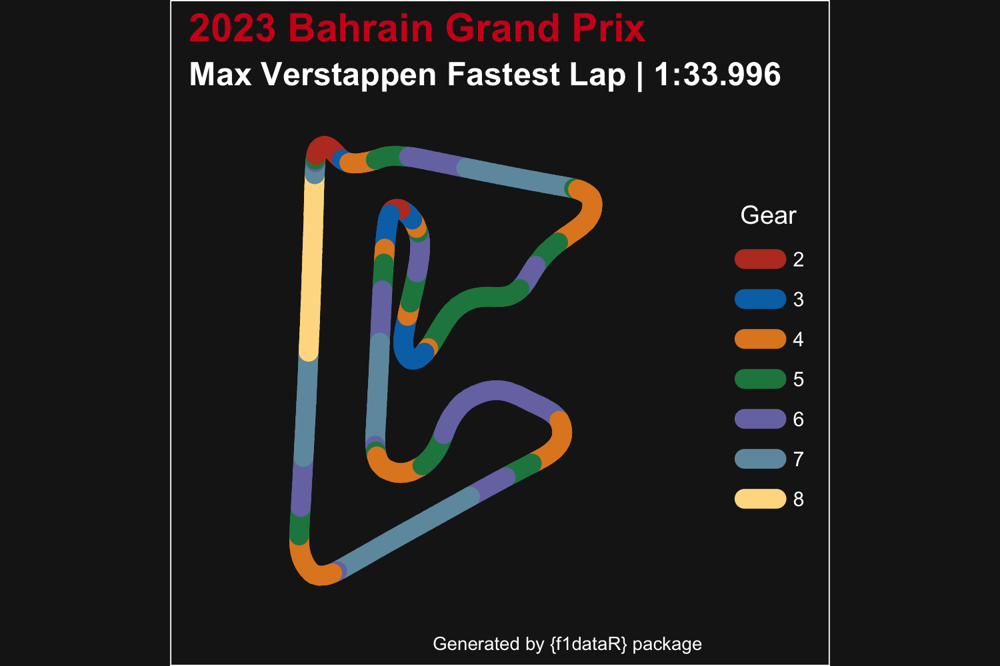

An R package to access Formula 1 Data from the Ergast API and the official F1 data stream via the FastF1 Python library.
Installation
Install the stable version from CRAN:
install.packages("f1dataR")or install the development version from GitHub:
if (!require("remotes")) install.packages("remotes")
remotes::install_github("SCasanova/f1dataR")
library(f1dataR)Data Sources
Data is pulled from:
Note the Ergast Motor Racing Database API will be shutting down at the end of 2024. When a new data source is identified the package will be migrated to that source.
Functions
Load Lap Times
load_laps(season = "current", race = "last")
This function loads lap-by-lap time data for all drivers in a given season and round. Round refers to race number. The defaults are current season and last race. Lap data is limited to 1996-present.
Example:
load_laps()
#> # A tibble: 900 × 6
#> driver_id position time lap time_sec season
#> <chr> <chr> <chr> <int> <dbl> <dbl>
#> 1 max_verstappen 1 1:35.505 1 95.5 2024
#> 2 leclerc 2 1:36.681 1 96.7 2024
#> 3 perez 3 1:37.222 1 97.2 2024
#> 4 alonso 4 1:38.507 1 98.5 2024
#> 5 piastri 5 1:38.705 1 98.7 2024
#> 6 norris 6 1:39.926 1 99.9 2024
#> 7 russell 7 1:40.459 1 100. 2024
#> 8 hamilton 8 1:40.900 1 101. 2024
#> 9 stroll 9 1:42.429 1 102. 2024
#> 10 tsunoda 10 1:42.531 1 103. 2024
#> # ℹ 890 more rowsor
load_laps(season = 2021, round = 15)
#> # A tibble: 1,025 × 6
#> driver_id position time lap time_sec season
#> <chr> <chr> <chr> <int> <dbl> <dbl>
#> 1 sainz 1 1:42.997 1 103. 2021
#> 2 norris 2 1:44.272 1 104. 2021
#> 3 russell 3 1:46.318 1 106. 2021
#> 4 stroll 4 1:47.279 1 107. 2021
#> 5 ricciardo 5 1:48.221 1 108. 2021
#> 6 alonso 6 1:49.347 1 109. 2021
#> 7 hamilton 7 1:49.826 1 110. 2021
#> 8 perez 8 1:50.617 1 111. 2021
#> 9 ocon 9 1:51.098 1 111. 2021
#> 10 raikkonen 10 1:51.778 1 112. 2021
#> # ℹ 1,015 more rowsDriver Telemetry
load_driver_telemetry(season = "current", race = "last", session = "R", driver, laps = "all")
When the parameters for season (four digit year), round (number or GP name), session (FP1. FP2, FP3, Q, S, SS, or R), and driver code (three letter code) are entered, the function will load all data for a session and the pull the info for the selected driver. The first time a session is called, loading times will be relatively long but in subsequent calls this will improve to only a couple of seconds
load_driver_telemetry(season = 2022, round = 4, driver = "PER")
#> # A tibble: 592 × 19
#> date session_time time rpm speed n_gear throttle brake
#> <dttm> <dbl> <dbl> <dbl> <dbl> <dbl> <dbl> <lgl>
#> 1 2022-04-24 14:19:27 8308. 0 11221 282 7 100 FALSE
#> 2 2022-04-24 14:19:27 8308. 0.021 11221 283 7 100 FALSE
#> 3 2022-04-24 14:19:28 8308. 0.278 11221 284 7 100 FALSE
#> 4 2022-04-24 14:19:28 8308. 0.401 11279 285 7 100 FALSE
#> 5 2022-04-24 14:19:28 8309. 0.678 11337 286 7 100 FALSE
#> 6 2022-04-24 14:19:28 8309. 0.681 11376 287 7 100 FALSE
#> 7 2022-04-24 14:19:28 8309. 0.86 11416 288 7 100 FALSE
#> 8 2022-04-24 14:19:29 8309. 1.08 11456 289 7 100 FALSE
#> 9 2022-04-24 14:19:29 8309. 1.18 11461 289 7 100 FALSE
#> 10 2022-04-24 14:19:29 8309. 1.24 11467 290 7 100 FALSE
#> # ℹ 582 more rows
#> # ℹ 11 more variables: drs <dbl>, source <chr>, relative_distance <dbl>,
#> # status <chr>, x <dbl>, y <dbl>, z <dbl>, distance <dbl>,
#> # driver_ahead <chr>, distance_to_driver_ahead <dbl>, …
load_driver_telemetry(season = 2018, round = 7, "Q", "HAM", laps = "fastest")
#> # A tibble: 534 × 19
#> date session_time time rpm speed n_gear throttle brake
#> <dttm> <dbl> <dbl> <dbl> <dbl> <dbl> <dbl> <lgl>
#> 1 2018-06-09 18:59:18 3788. 0 10674 297 8 100 FALSE
#> 2 2018-06-09 18:59:18 3788. 0.016 10704 298 8 100 FALSE
#> 3 2018-06-09 18:59:18 3788. 0.043 10762 299 8 100 FALSE
#> 4 2018-06-09 18:59:19 3788. 0.256 10820 301 8 100 FALSE
#> 5 2018-06-09 18:59:19 3788. 0.343 10847 302 8 100 FALSE
#> 6 2018-06-09 18:59:19 3788. 0.496 10875 303 8 100 FALSE
#> 7 2018-06-09 18:59:19 3789. 0.643 10921 303 8 100 FALSE
#> 8 2018-06-09 18:59:19 3789. 0.736 10967 304 8 100 FALSE
#> 9 2018-06-09 18:59:19 3789. 0.943 10990 305 8 100 FALSE
#> 10 2018-06-09 18:59:19 3789. 0.976 11014 306 8 100 FALSE
#> # ℹ 524 more rows
#> # ℹ 11 more variables: drs <dbl>, source <chr>, relative_distance <dbl>,
#> # status <chr>, x <dbl>, y <dbl>, z <dbl>, distance <dbl>,
#> # driver_ahead <chr>, distance_to_driver_ahead <dbl>, …Lap-by-Lap information
load_session_laps(season = "current", race = "last", session = "R", add_weather = FALSE)
This function will give us detailed information of lap and sector times, tyres, weather (optional), and more for every lap of the GP and driver.
load_session_laps(season = 2023, round = 4, add_weather = TRUE)
#> # A tibble: 962 × 39
#> time driver driver_number lap_time lap_number stint pit_out_time pit_in_time
#> <dbl> <chr> <chr> <dbl> <dbl> <dbl> <dbl> <dbl>
#> 1 3892. VER 1 110. 1 1 NaN NaN
#> 2 4000. VER 1 108. 2 1 NaN NaN
#> 3 4108. VER 1 108. 3 1 NaN NaN
#> 4 4215. VER 1 107. 4 1 NaN NaN
#> 5 4322. VER 1 107. 5 1 NaN NaN
#> 6 4430. VER 1 107. 6 1 NaN NaN
#> 7 4537. VER 1 107. 7 1 NaN NaN
#> 8 4643. VER 1 107. 8 1 NaN NaN
#> 9 4750. VER 1 107. 9 1 NaN NaN
#> 10 4861. VER 1 111. 10 1 NaN 4860.
#> # ℹ 952 more rows
#> # ℹ 31 more variables: sector1time <dbl>, sector2time <dbl>, sector3time <dbl>,
#> # sector1session_time <dbl>, sector2session_time <dbl>,
#> # sector3session_time <dbl>, speed_i1 <dbl>, speed_i2 <dbl>, speed_fl <dbl>,
#> # speed_st <dbl>, …Circuit Data
load_circuit_details(2023, 4)
This function loads circuit details for a specific race session. Note that different track layouts are used at some circuits depending on the year of the race. Useful for visualizing or annotating data. Contains information on corners, marshal_lights and marshal_sectors.
Plotting
plot_fastest(season = "current", round = "last", session = "R", driver, color = "gear")
A built in plotting function that plots the circuit and a driver’s fastest laps’ speed or gear exists.
plot_fastest(season = 2023, round = 1, session = "R", driver = "VER", color = "gear")
Two helper functions exist as well. The first, theme_dark_f1() assists with colour schemes similar to that used in other F1 graphics. The second, correct_track_ratio() is a function that fixes track ratio issues that appear when you create images similar to that above from plot_fastest(). Please refer to their documentation for usage.
Cache information
The cache directory for sessions can be set manually with the options function
options(f1dataR.cache = "path/to/directory")Other functions
Many other functions exist, and are flexible enough to call the current season with the string "current" or use the year as a numeric value. Similarly, round can be "last" or a round number (from 1 to the total number of races in a season).
load_constructors()load_drivers(season = "current")load_circuits(season = "current")load_pitstops(season = "current", round = "last")load_quali(season = "current", round = "last")load_results(season = "current", round = "last")-
load_schedule(season =2024) load_sprint(season = "current", round = "last")load_standings(season = "current", round = "last", type = c("driver", "constructor"))
Loaded Data
The package also includes a static data frame for all current Constructors. Complete with team colors, and links to team logos.
constructor_data %>% colnames()
#> [1] "constructor_id" "constructor_color" "constructor_color2"
#> [4] "constructor_logo"